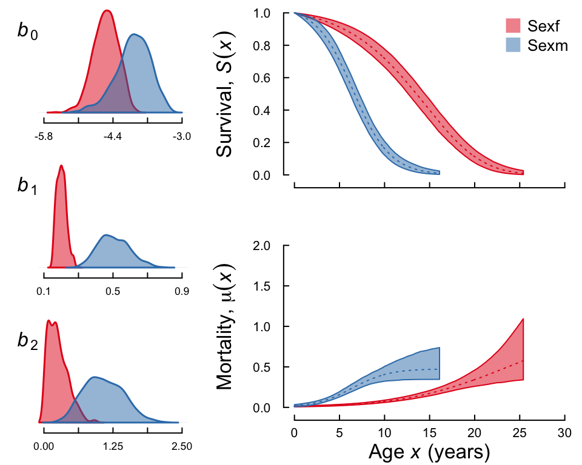

Introduction
In most cases reesarchers will want to go beyond simply estimating functional forms of mortality and comparing their model fits. They will want to study the effects of individual covariates on the mortality trajectories. BaSTA can currently handle only covariates that do not vary through time. For example, one could fit a model with sex (for most species), but not body mass, since this varies through time. Nevertheless, BaSTA allows fitting of both continuous and categorical covariates in various ways and is a powerful tool for investigating a range of questions.
Formatting covariate data.
Before proceeding further, it is first necessary to introduce the format required for covariates. Briefly, the covariates must be included in the basta input data as a series of columns (with each row representing an individual) appended after the recapture matrix. It is very important that the order of individuals in both parts of the data are the same for obvious reasons! BaSTA includes a handy function for doing this, MakeCovMat().
In the following example we will include covariate information to the BaSTA input table. To do this, let’s read in the table covData.csv
covdat <- read.csv("data/covData.csv", header = TRUE)which should look like
head(covdat)
#> ID Sex IndivMeasure
#> 1 1 m -0.2278
#> 2 3 m -0.5347
#> 3 9 m 0.2889
#> 4 10 f 0.1523
#> 5 11 f 0.9765
#> 6 12 m 0.4826Here, the data frame covdat contains one line per individual with sex information and with a continuous individual level covariate. We will focus on the sex covariate first. To construct a matrix of covariates that BaSTA can handle, it is enough to use the BaSTA function MakeCovMat()
covars <- MakeCovMat("~ Sex - 1", data = covdat)Alternatively, we could have specified the name or number of the column(s) of the covariate(s) we wanted to include as
covars <- MakeCovMat("Sex", data = covdat)The advantage of using R formulas is that they simplify incorporating interactions between covariates. The resulting matrix should look like this
head(covars)
#> ID Sexf Sexm
#> 1 1 0 1
#> 2 3 0 1
#> 3 9 0 1
#> 4 10 1 0
#> 5 11 1 0
#> 6 12 0 1Now we only need to collate the dat matrix that includes the capture-history information with the covars matrix
datCovs <- data.frame(dat, covars[, -1])BaSTA analysis with categorical covariates
Now, to run the analysis, we simply use function basta() as we did before. Thus, to run a Gompertz model and save the output in an object gssc you can type
gssc <- basta(datCovs, studyStart = 1970, studyEnd = 2000, model = "LO",
nsim = 2, ncpus = 2, parallel = TRUE)which produces the following summary
summary(gssc)
#>
#> Output from BaSTA version 1.9.4
#>
#> Call:
#> Model : LO
#> Shape : simple
#> Covars. structure : fused
#> Minimum age : 0
#> Cat. covars. : Sexf, Sexm
#> Cont. covars. :
#>
#> Model settings:
#> niter burnin thinning nsim
#> 11000 1001 20 2
#>
#> Jumps and priors:
#> Jump.sds Prior.means Prior.sds
#> b0.Sexf 0.32147 -3e+00 1
#> b0.Sexm 0.48692 -3e+00 1
#> b1.Sexf 0.02391 1e-02 1
#> b1.Sexm 0.07422 1e-02 1
#> b2.Sexf 0.29448 1e-10 1
#> b2.Sexm 0.46422 1e-10 1
#>
#> Mean Kullback-Leibler
#> discrepancy calibration (KLDC):
#> b0 b1 b2
#> Sexm - Sexf 0.9163 0.9995 0.988
#>
#> Coefficients:
#> Estimate StdErr Lower95%CI Upper95%CI SerAutocor UpdateRate
#> b0.Sexf -4.5481 0.251849 -5.04947 -4.1072 0.7889 0.2551
#> b0.Sexm -3.9917 0.348608 -4.78912 -3.3925 0.7831 0.2516
#> b1.Sexf 0.2017 0.027708 0.15670 0.2653 0.8813 0.2417
#> b1.Sexm 0.5051 0.090832 0.34579 0.6958 0.8616 0.2642
#> b2.Sexf 0.2530 0.179238 0.01355 0.6603 0.7918 0.2573
#> b2.Sexm 1.0797 0.355270 0.45627 1.7828 0.8071 0.2493
#> pi.1970 0.4998 0.008361 0.48302 0.5152 0.1678 1.0000
#> PotScaleReduc
#> b0.Sexf 0.9992
#> b0.Sexm 0.9992
#> b1.Sexf 1.0007
#> b1.Sexm 0.9990
#> b2.Sexf 1.0060
#> b2.Sexm 0.9995
#> pi.1970 1.0046
#>
#> Convergence:
#> Appropriate convergence reached for all parameters.
#>
#> DIC:
#> 6982Let’s have a look at the survival and mortality trajectories:
plot(gssc, fancy = TRUE)
After running the model, you can verify if the inclusion of the sex covariate improved the fit by comparing the DICs between the multiout object and gssc. Now you can try to run the model for the Weibull and logistic models either individually (create objects called wssc and lssc) or in one go using multibasta() to create a multi-BaSTA object called multisc).
Comparing parameter estimates for categorical covariates
To find out to what extent the parameter estimates between males and females differ, you should look at the Mean Kulback-Leibler discrepancy calibration (KLDC) values printed in from the summary() function. You can find a detailed explanation of the KLDC values below, but in short for a given parameter the KLDC tell us how much overlap there is between the posterior densities of the female and male estimate of the parameter. For instance, print run a summary of gssc, you will see that the KLDCs for b0 and b1 between males and females are close to 1, which implies that there is almost no overlap between the posterior densities. A value close to 0.5 would imply that there is a lot of overlap.
Comparing parameter densities: Kullback-Leibler discrepancies
Within BaSTA, the Kullback-Leibler discrepancies (KLD; Kullback and Liebler 1951, McCulloch 1989) provide the user with a measure of how differently (or similarly) each categorical covariate affects survival. For instance, we may wish to evaluate the differences in survival between males and females with a simple Gompertz model. To illustrate the calculation of KLD, lets take b0, for which the resulting `sub-parameters’ would be αf and αm such that, for an individual i, we have b0 = αfIi + αm(1 − Ii), where Ii is an indicator function that assigns 1 if the individual is a female and 0 otherwise. For each of these parameters, BaSTA produces a posterior density, say Pf = p(αf|…) and Pm = p(αm|…), respectively. The KLD between these densities is calculated as
$$
K(P_f, P_m) = \int_{0}^{\infty} P_f \log\left(\frac{P_f}{P_m}\right) d\alpha.
$$
The result can be interpreted as how far off we would be if we tried to predict αm from the posterior density of αf. If both densities are identical, then K(Pf, Pm) = 0, which suggests that there is no distinction between males and females for b0. As the KLD values increase the discrepancy becomes larger. As you can inferred from the equation above, the relationship is asymmetric, namely K(Pf, Pm) ≠ K(Pm, Pf).
To make KLD easier to interpret, McCulloch (1989) proposed a simple calibration of the KLD values that reduces the asymmetry. This is as follows: Let k = K(Pf, Pm) and q(k) be a calibration function such that
$$
\begin{eqnarray*}
k & = & K(P_f,P_m) \\
&=& K\left\{B\left(\frac{1}{2}\right), B[q(k)]\right\},
\end{eqnarray*}
$$
where $B(\frac{1}{2})$ is a Bernouilli distribution for an event with probability 1/2 (i.e. same probability of success and failure). This calibration is then calculated as
$$
q(k) = \frac{1 + (1 - e^{-2k})^{\frac{1}{2}}}{2}
$$
.
Thus, q(k) ranges from 0.5 to 1, where a value of 0.5 means that the posterior densities are identical, and 1 that there is no overlap between them.
Changing the structure of the covariates
As you might have notticed, BaSTA by default assigns any categorical covariate as a function of the mortality parameters. We can change this in case we believe that these covariates only affect mortality proportionally, using a proportional hazards model. This is simply done with argument covarsStruct = "prop.haz":
gsscph <- basta(datCovs, studyStart = 1970, studyEnd = 2000, model = "LO",
covarsStruct = "prop.haz", nsim = 2, ncpus = 2,
parallel = TRUE)We can examine the DIC of the two models to see if using proportional hazards improves the fit.
gsscph$DIC
#> D.ave D.mode pD k DIC
#> 5061 2797 2264 5 7325
gssc$DIC
#> D.ave D.mode pD k DIC
#> 5033 3084 1949 7 6982It seems not, so we would favour the model with fused covariate structure.
Adding continuous covariates
Finally, we will run the model adding a continuous covariate. To do this, let’s run function MakeCovMat() and add the new covariate to the formula
covars <- MakeCovMat("~ Sex + IndivMeasure - 1", data = covdat)Now join the tables:
datCovs <- data.frame(dat, covars[, -1])and run the analysis. Let’s call the new object for “Gompertz, simple, both covariates:
gsbc <- basta(datCovs, studyStart = 1970, studyEnd = 2000, model = "LO",
nsim = 2, ncpus = 2, parallel = TRUE)Now you can try to evaluate which model performs best. What if you test different functional forms with arguments model and shape (you can do this with mulitbasta()).